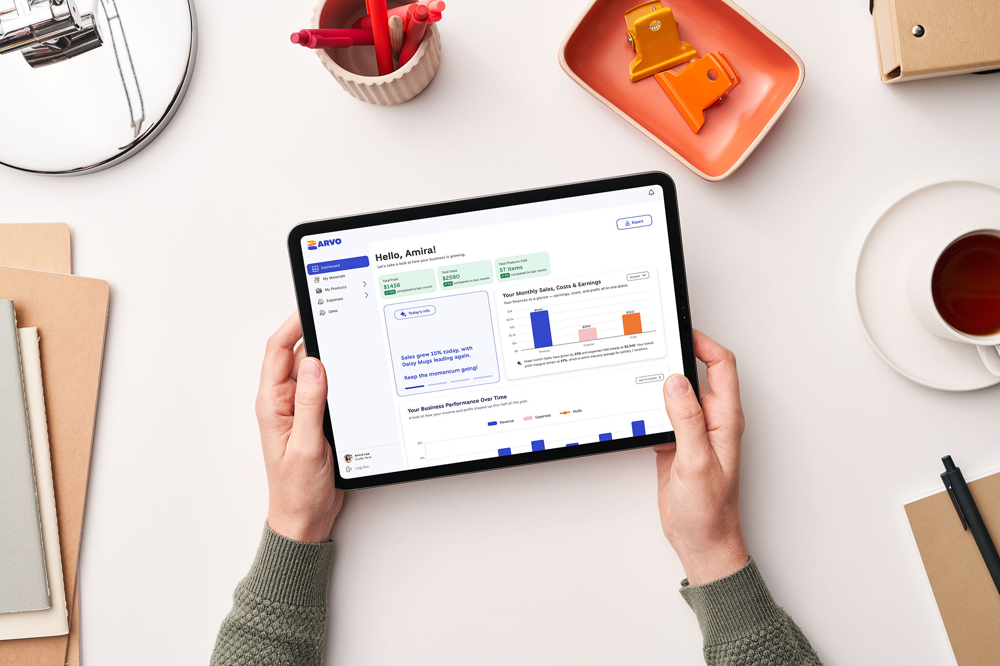
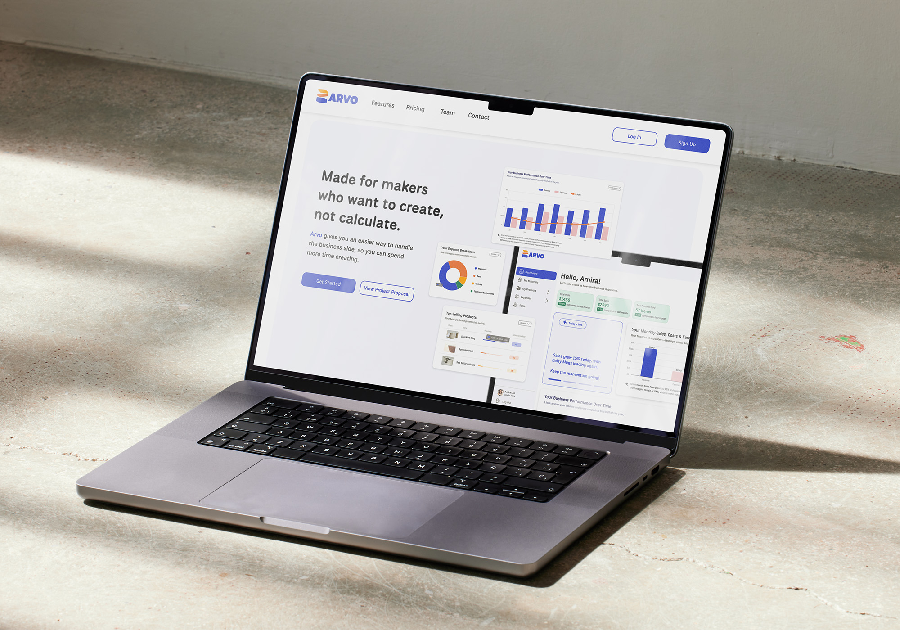
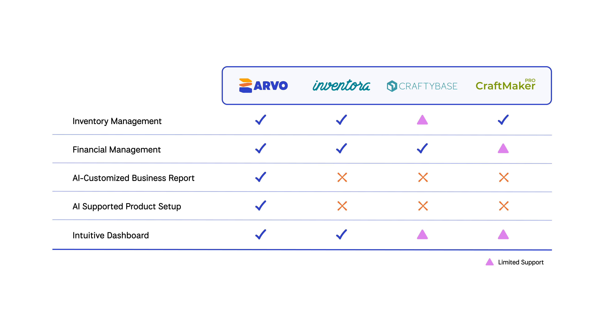
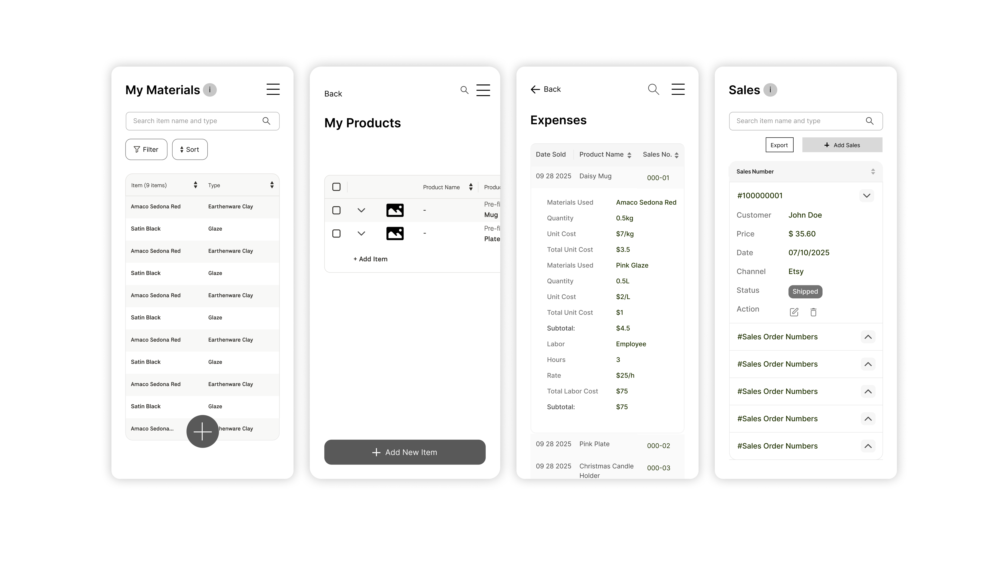
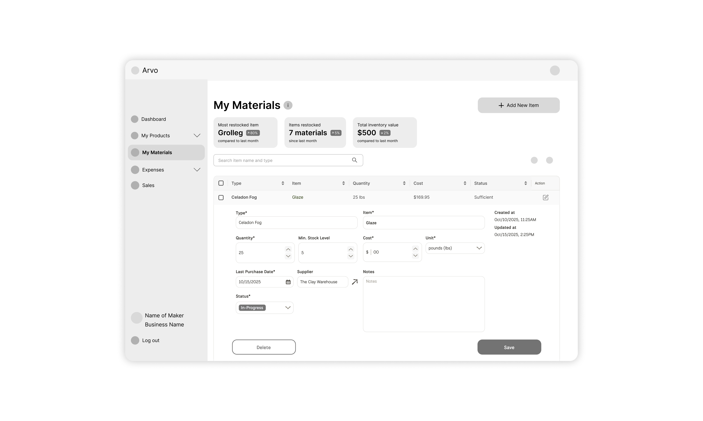
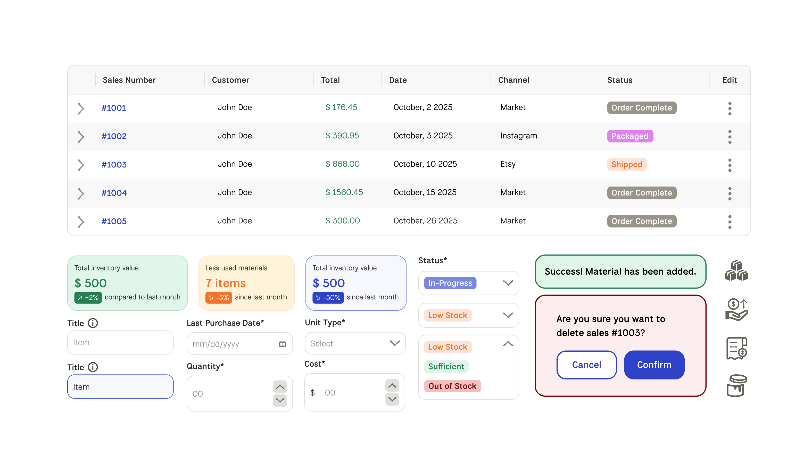
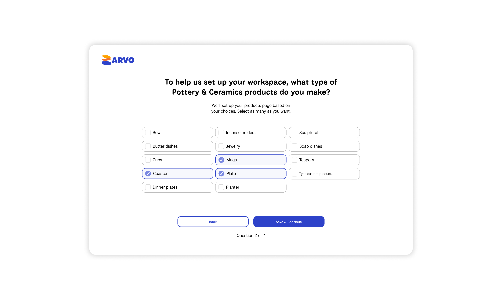
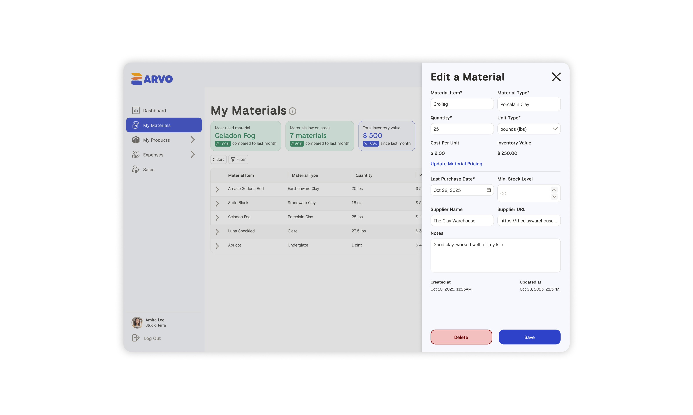
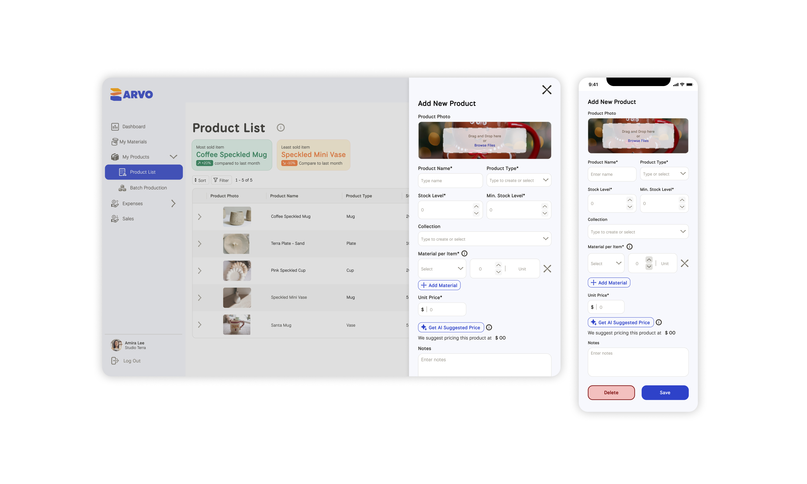

Arvo
Desktop Web Platform — UX Design
The Introduction
Arvo is an inventory and cost management web platform built specifically for independent handcraft makers. It streamlines cost tracking, revenue management, and inventory while giving makers a clear business health dashboard to understand their financial performance and move off spreadsheets.

Photo Credit: Ruixin Tian
Role
Lead Designer
UX Research, Card Sorting,
Usability Testing, Materials Feature, Iconography, Component Library
Tools
Figma, Illustrator, InDesign, Maze
Context
Academic Project — Web Application with Data Visualization
Year
2025
Arvo was my concept, inspired by watching DIY creators build businesses and share their journeys on social media. I was always curious how they managed the financial side without any formal business knowledge, and realised nobody had built a tool that met them where they actually were. In a program where most projects gravitate toward health or education, I wanted to explore something different: an industry I was genuinely curious about, with a strong business angle and a real underserved audience.
The Challenge
Independent makers overwhelmingly start from passion, not business training. The data they produce is there but too abstract to interpret without accounting knowledge, often lost in notes or spreadsheets. The result: pricing guesswork, invisible costs, and no reliable way to know whether the business is actually growing.

Wireframes
The Research
We went in assuming the core need was tracking. User interviews and surveys quickly reframed that. What makers actually needed wasn't just a record of what they had, it was an answer to a more urgent question: what is actually making me money, and what is costing me without me realising it?
Personas grounded our understanding of who we were designing for: independent, small-batch makers in Canada who had transitioned into entrepreneurship and were managing every part of the business themselves, usually without a financial or business background.
Competitive analysis confirmed the opportunity. The market leaned heavily on inventory and commerce features but left business intelligence largely unaddressed: no AI insights, no guided setup, no way to contextualise the numbers for someone who had never read a balance sheet.

Competitive Analysis
The Process
One of the earliest structural challenges was information architecture. Makers generate data across many categories from raw materials, tools and equipment, packaging, to admin costs, but how they mentally organise that information varies. The card sorting exercise shaped Arvo's navigation and Expenses input structure.
We also introduced onboarding after sign-up which contained a short series of questions about the user's business, so the platform could be meaningfully configured from the first session rather than dropping users into a blank dashboard.

As a team, we divided ownership across four features: Materials, Products, Expenses, and Sales. Early on, each designer was solving layout problems independently and our wireframes reflected that. It became clear that we needed to align on one system before building further. Information architecture has to be a team decision, not an individual one, or the product fragments before it's even built.
Designing data tables for mobile was our most technically challenging problem. Developers preferred a scrollable table mirroring desktop, which was simple to build but not user friendly. Our instructors flagged the importance of proper labelling throughout since moving information around on mobile makes context easy to lose.

My primary area of ownership was the Materials feature: where users log raw material information and connect those inputs to the products they make. If material data was confusing to enter, everything downstream, like cost calculations and profit insights, would break. The design had to make a data-heavy task feel logical and low-friction for someone with no accounting background.
Building the component and icon library was a natural extension of my brand identity background. Both are about creating a visual language others can use and build on. It kept the team aligned and moving without revisiting decisions we'd already made.

The Decisions
Card sorting shaped the architecture. Rather than imposing a structure based on accounting logic, we let users tell us how they grouped their costs. The result was a navigation and input system that matched how makers actually think about their business, not how a bookkeeper would.
Onboarding as personalisation. Adding a business profile setup after sign-up meant the platform could surface relevant defaults and insights from the start. It also reduced the blank-slate problem, where users arrived at a dashboard that already understood something about them.

Expandable rows over scrollable tables. For mobile data tables, we chose an expandable row approach over a horizontally scrollable table. The two most important columns stay visible at all times, with additional details revealed on tap and a three-dot menu handling edit and delete actions. It kept the experience clean, scannable, and usable on a small screen.
Materials as the connective tissue. The Materials feature wasn't just a log, it was the link between what a maker spends and what a product actually costs to make. Designing it to be thorough but approachable was the key to making the rest of the platform's insights trustworthy.

The Reflection
This project taught me that assumptions are the most expensive thing you can bring into a design process. We were ready to build a tracker; our users needed a profit tool. Following the research rather than the initial brief made the final product genuinely more useful.
Wrestling with business logic, cost formulas, and financial flows without accounting knowledge pushed me to ask better questions and collaborate more deliberately. The card sorting exercise was a reminder that structure should come from users, not designers.
Leading the team was its own learning curve. I already had a sense of how to map weekly output, assign tasks, and keep a project moving, but balancing Arvo's demands alongside a heavy course load required a different kind of discipline. Managing teammates of different experience levels taught me how to communicate design decisions clearly, give constructive feedback, and bring people along without losing momentum.
